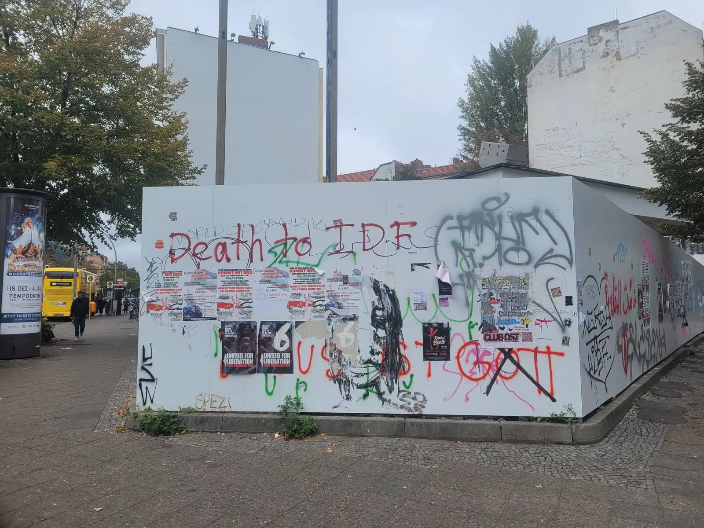

דלג לתוכן
תפריט
בית
|
מבוא
|
אינדקס א–ת
|
הגלאי
|
מתודולוגיה
|
אודות
|
מוזיקה
|
English
גלוסר א–ת
30 מונחים מבוססי מקורות · עברית / English · חיפוש א–ת

מבוא מאת קיל ג׳ונס
כיצד נבנה הגלוסר — מתודולוגיה
חיפוש במילון
A
B
C
E
F
G
H
I
J
M
N
O
P
S
Z
A
אנטי־ציונות / אנטיציוניזם
אפרטהייד
חומת האפרטהייד
B
דם על הידיים
חרם, משיכת השקעות וסנקציות (BDS)
הקצב(ים) של עזה
בכל אמצעי הכרחי
C
הפסקת אש עכשיו
רוצחי ילדים
ענישה קולקטיבית
E
סיימו את המצור
סיימו את הכיבוש
טיהור אתני
אתנוסטייט
F
פלסטין חופשית
מהנהר ועד הים
G
רצח עם / ג׳נוסיידי
גלובליזציה של האינתיפאדה
H
הסברה
I
מדינה אימפריאלית
J
עליונות יהודית
M
נאצים בני זמננו
N
מדינה נאצית
O
כלא באוויר הפתוח
P
פינקוושינג
S
קולוניאליזם של מתיישבים
עצרו את רצח העם
Z
Zio / Zionazi
ציונות
ציונות היא גזענות